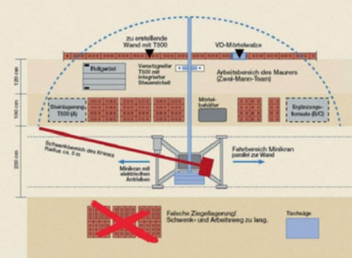
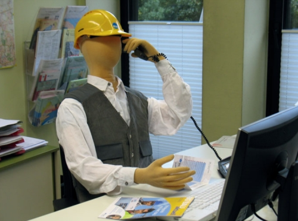
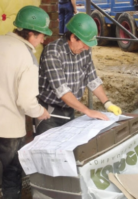

Von grundlegender Bedeutung für ergonomisch sinnvoll gestaltete Arbeitsbedingungen sind organisationsbezogene Kernelemente (Arbeitsorganisation, Arbeitsabläufe, Arbeitsumgebung usw.), klare Zielsetzungen, Handlungsempfehlungen und Zuständigkeiten.

Baustelleneinrichtungsplan
Sie als Unternehmer können im Vorfeld erheblichen Einfluss auf die Belastungen und die Arbeitsleistung Ihrer Mitarbeiter nehmen. So können Sie Rahmenbedingungen für optimale Arbeitsbedingungen durch frühzeitige Planung
schaffen.
Dafür ist es notwendig, die Besonderheiten der Örtlichkeiten vor Arbeitsbeginn zu erfassen. Nur so ist es möglich, frühzeitig für entsprechende Maßnahmen zu sorgen. Ein Baustelleneinrichtungsplan gehört zu den planerischen Grundlagen. Darin kann vermerkt werden, wo Lagerflächen zur Verfügung stehen und über welche Zugänge die Arbeitsplätze erreicht werden können.
Für den Arbeitsablauf macht es einen großen Unterschied, ob technische Hilfsmittel eingesetzt werden können oder ob manuell unter beengten Verhältnissen gearbeitet werden muss. Heute existieren bereits vielfältige technische Lösungen, die die Arbeit nicht nur erleichtern, sondern sich betriebswirtschaftlich auch rechnen.
Für eine gute Arbeitsorganisation bei Maurerarbeiten ist z. B. zu prüfen, ob der Einsatz von großformatigen Steinen und der damit verbundene Einsatz eines Versetzgeräts (Minikran, Mauermaschine) möglich sind. Kann kein Versetzgerät benutzt werden, sollten aus ergonomischer Sicht auch keine großformatigen Steine eingesetzt werden.
Zur Arbeitsorganisation gehören auch die frühzeitige Beschaffung der Materialien und die richtige Lagerung vor Ort. So könnten bei der Erstellung von nicht tragenden Innenwänden die Steinpakete noch vor Erstellung der nächsten Betondecke auf der Decke positioniert werden. Dadurch entfallen zum großen Teil die später sonst erforderlichen mühseligen Transporte der Mauersteine in das Gebäude.
Es ist wichtig, Absprachen mit den anderen Gewerken zu treffen, um hier vorhandene technische Hilfsmittel gemeinsam nutzen zu können. Dies kann der Kran der Rohbaufirma sein, um eigene schwere bzw. sperrige Transporte ins Bauwerk durchzuführen. Ein noch vorhandenes Außengerüst mit einem Anstellaufzug lässt sich nach Absprache für die eigenen Innenarbeiten nutzen.

Arbeitsorganisation
Mit Störungen im Arbeitsprozess muss man rechnen. Ein gutes Zeitmanagement sollte Störungen erlauben. Welche Verhaltensweisen machen Probleme? Was können Sie stattdessen tun?
Die Lastenhandhabungsverordnung enthält die Forderung nach Unterweisung der Beschäftigten zur manuellen Handhabung von Lasten und der dabei auftretenden Gefahren. Wesentliche Inhalte sind:
Die in der Beilage für Mitarbeiter enthaltenen Hinweise können Sie auch für eine Unterweisung benutzen.
